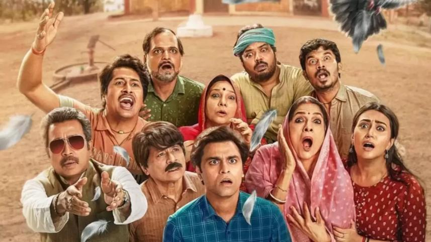

"Life in Phulera is anything but simple."
Panchayat follows Abhishek Tripathi, an engineering graduate who, due to a lack of better job options, takes up the position of secretary in a remote panchayat office in the village of Phulera, Uttar Pradesh. Stuck between his aspirations to clear the CAT exam and the eccentricities of village politics, Abhishek gradually builds heartfelt bonds with the village head, the local pradhan, and its quirky residents while tackling everyday rural challenges.